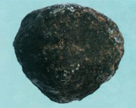

龙涎香

拼音
Lónɡ Xián Xiānɡ
别名
龙泄、龙涎、龙腹香、鲸涎香
来源
鲸目鲸科抹香鲸（巨头鲸）Physeter catodon L.;Physeter macrocephalus L.，以抹香鲸的肠凝结物入药。
生境分布
分布全球，栖于远洋暖流。
药材特点
抹香鲸，又名：真甲鲸、巨头鲸。 为齿鲸类中最大的一种。一般体长14米左右，最大者可达23米。雌雄个体差异大，雌者仅雄者之半。头部庞大，约占体长1／4以上。额部钝圆形，比细长的下腭甚为突出。仅下颌具牙齿。头顶左方具一喷水孔。眼位于口角的后方。外耳孔极小。体形前粗后细。鳍肢较小，宽而圆，无背鳍，但具少数肉峰，尾鳍较宽。体背暗黑色，体侧略淡，腹面银灰或白色。以深海产的乌贼为主要食物，亦吃多种小鱼。
性状
龙涎香是生在鲸肠内的灰或微黑色的分泌物，从动物体内取出时有难闻的臭气，比重小于水，约0.7～0.9，干燥后现琥珀色，带甜酸味，熔点60℃，燃烧发蓝焰，可溶解于纯酸中，并且有黄绿色荧光现象，本身并无多大香味，燃烧时香气四溢，酷似麝香而更幽雅，熏过之物保有持久芬芳，已知成份为碳酸钙、氯化钾和少量氯化铁等。
性味
甘酸，气腥。 ①《药性考》："味甘，气腥，性涩。" ②《纲目拾遗》："气腥，味微酸咸，无毒。"
功能主治
开窍化痰，活血利气。主治神昏气闷，心腹诸痛，消散症结，咳喘气逆。
用法用量
1～3分。
化学成分
约含25％龙涎香醇。灰分中主要含氧化钙6.21％、氧化镁9.88％、五氧化二磷4.65％、二氧化硅6.02％。
药理作用
1：与麝香相似：小量对动物中枢神经系统有兴奋作用，大量则表现抑制；对离体心脏有强心作用，对整体动物则引起血压下降
摘录
《全国中草药汇编》